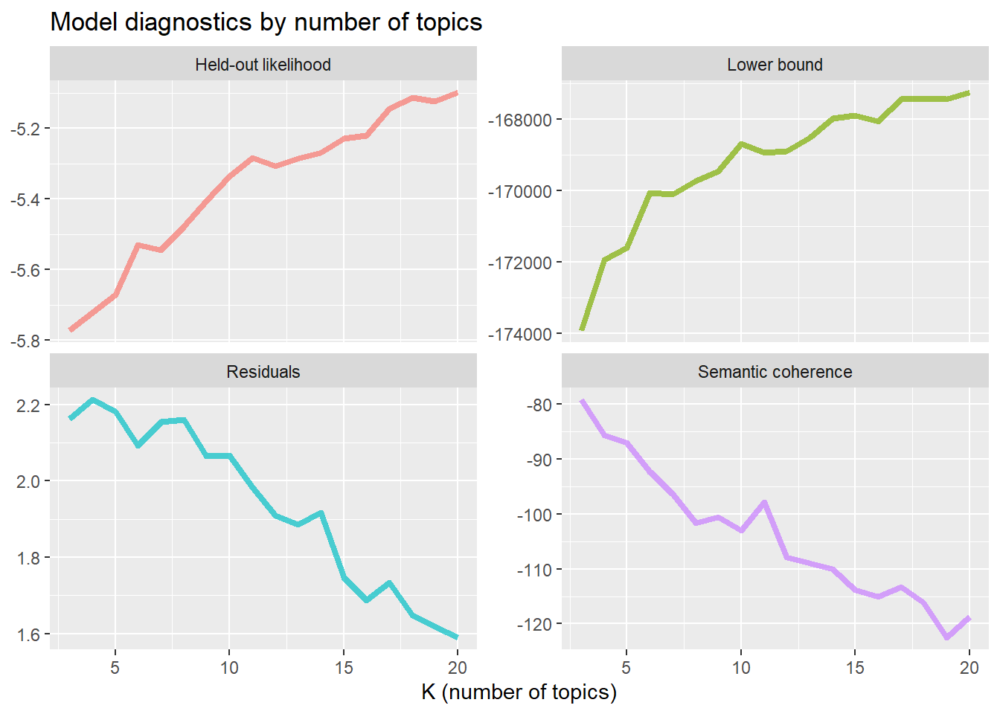
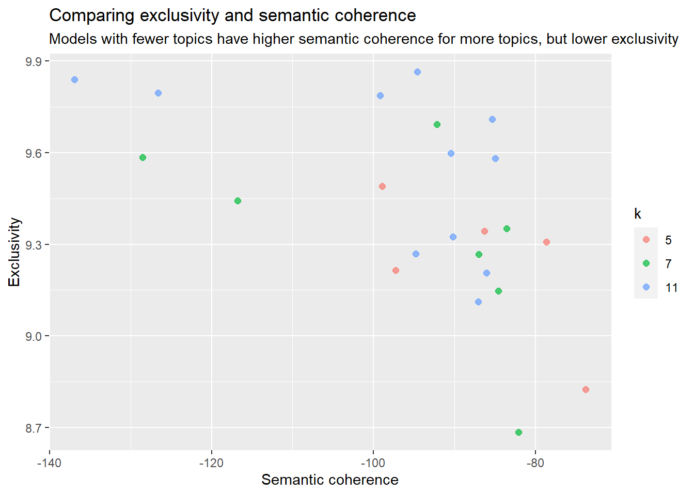

Showcase
Focus on ‘Text as data’
Open this showcase in other interactive and executable environments:


Background
- Scraping Amazon Reviews with R
Scraping
Create function
based on stackoverflow post.
scrape_amazon <- function(page_num, review_url) {
url_reviews <- paste0(review_url, "&pageNumber=", page_num, "&sortBy=recent")
doc <- read_html(url_reviews)
map_dfr(doc %>% html_elements("[id^='customer_review']"), ~ data.frame(
review_title = .x %>% html_element(".review-title") %>% html_text2(),
review_text = .x %>% html_element(".review-text-content") %>% html_text2(),
review_star = .x %>% html_element(".review-rating") %>% html_text2(),
date = .x %>% html_element(".review-date") %>% html_text2() %>% gsub(".*vom ", "", .),
author = .x %>% html_element(".a-profile-name") %>% html_text2(),
page = page_num
)) %>%
as_tibble %>%
return()
}Define urls
url <- list(
p01 = "https://www.amazon.de/LINEAVI-Eiwei%C3%9F-Shake-Kombination-Molkeneiwei%C3%9F-laktosefrei/product-reviews/B018IB02AU/ref=cm_cr_dp_d_show_all_btm?ie=UTF8&reviewerType=all_reviews",
p02 = "https://www.amazon.de/Detoxkuren%E2%80%A2-Entw%C3%A4sserung-Entschlackung-Stoffwechsel-entschlacken/product-reviews/B072QW5ZN1/ref=cm_cr_dp_d_show_all_btm?ie=UTF8&reviewerType=all_reviews",
p03 = "https://www.amazon.de/Saint-Nutrition%C2%AE-KETO-BURN-Appetitz%C3%BCgler/product-reviews/B08B67V8G5/ref=cm_cr_dp_d_show_all_btm?ie=UTF8&reviewerType=all_reviews",
p04 = "https://www.amazon.de/Yokebe-vegetarisch-Mahlzeitersatz-Gewichtsabnahme-hochwertigen/product-reviews/B08GYZ8LRB/ref=cm_cr_dp_d_show_all_btm?ie=UTF8&reviewerType=all_reviews",
p05 = "https://www.amazon.de/Vihado-Liquid-chlorophyll-drops-alfalfa/product-reviews/B093XNC8QH/ref=cm_cr_arp_d_paging_btm_next_2?ie=UTF8&reviewerType=all_reviews"
)- p01 (
Lineavi): 1.679 Gesamtbewertungen, 782 mit Rezensionen –> 79 pages - p02 (
DietySlim): 1.652 Gesamtbewertungen, 268 mit Rezensionen –> 28 pages - p03 (
Keto Burn): 3.341 Gesamtbewertungen, 540 mit Rezensionen –> 55 pages - p04 (
Yokebe): 1.586 Gesamtbewertungen, 156 mit Rezensionen –> 16 pages - p05 (
Vihado): 1.335 Gesamtbewertungen, 396 mit Rezensionen –> 40 pages
Scrape data
amazon <- list()
# p01
for (i in 1:79) {
df <- scrape_amazon(page_num = i, review_url = url$p01)
amazon$raw$p01[[i]] <- df
}
# p02
for (i in 1:28) {
df <- scrape_amazon(page_num = i, review_url = url$p02)
amazon$raw$p02[[i]] <- df
}
# p03
for (i in 1:55) {
df <- scrape_amazon(page_num = i, review_url = url$p03)
amazon$raw$p03[[i]] <- df
}
# p04
for (i in 1:16) {
df <- scrape_amazon(page_num = i, review_url = url$p04)
amazon$raw$p04[[i]] <- df
}
# p05
for (i in 1:40) {
df <- scrape_amazon(page_num = i, review_url = url$p05)
amazon$raw$p05[[i]] <- df
}Bind rows
product <- names(url)
# bind rows for each product
for (i in product) {
amazon$data$raw[[i]] <- amazon$raw[[i]] %>%
bind_rows() %>%
rownames_to_column("id") %>%
mutate(across(id, as.numeric))
}
# bind rows of all products
amazon$data$full <- amazon$data$raw %>%
bind_rows(.id = "src")Save data
saveRDS(
amazon,
file = here("data/08-text_as_data/reviews_only.RDS"))Data processing
amazon$data$clean <- amazon$data$full %>%
# create doc_id
rownames_to_column(., var = "doc_id") %>%
mutate(
# create unique ids (src_id, doc_id)
src_id = id,
id = paste(src, sprintf("%03d", id), sep = "_"),
# convert to factor
across(c(id, src), as.factor),
across(doc_id, as.numeric),
# review body
review_body = paste(review_title, review_text),
body_trimmed = str_replace_all(review_body, "[\r\n]" , ""), # delete line breaks
lang_detect = fastText::language_identification(
body_trimmed,
system.file("language_identification/lid.176.ftz", package = "fastText")),
lang = lang_detect$iso_lang_1,
lang_prob = lang_detect$prob_1,
# edit date variable
date_raw = date,
date_base = str_extract(date_raw, "\\d{1,2}(.*)\\d{1,4}"),
## Change date format to DD.MM.YYYY
across(date_base, str_replace, " Januar ", "01."),
across(date_base, str_replace, " Februar ", "02."),
across(date_base, str_replace, " März ", "03."),
across(date_base, str_replace, " April ", "04."),
across(date_base, str_replace, " Mai ", "05."),
across(date_base, str_replace, " Juni ", "06."),
across(date_base, str_replace, " Juli ", "07."),
across(date_base, str_replace, " August ", "08."),
across(date_base, str_replace, " September ", "09."),
across(date_base, str_replace, " Oktober ", "10."),
across(date_base, str_replace, " November ", "11."),
across(date_base, str_replace, " Dezember ", "12."),
## Convert to date
date = as.Date(date_base, format = "%d.%m.%Y"),
## create date variables
year = as.factor(year(date)),
month = as.factor(month(date)),
day = as.factor(day(date)),
rating = as.numeric(str_extract(review_star, "\\d{1}(?=,)"))
) %>%
# relcoate variables
relocate(starts_with("src"), .after = id) %>%
relocate(starts_with("date"), .after = src_id) %>%
relocate(year,month,day, .before = review_title) %>%
relocate(starts_with("lang"), .after = page) %>%
relocate(starts_with("review"), .after = lang_prob) %>%
relocate(review_star, .after = body_trimmed)Check language identification
Languages
amazon$data$clean %>%
frq(lang)lang <character>
# total N=2142 valid N=2142 mean=2.67 sd=1.52
Value | N | Raw % | Valid % | Cum. %
---------------------------------------
als | 1 | 0.05 | 0.05 | 0.05
de | 1736 | 81.05 | 81.05 | 81.09
en | 57 | 2.66 | 2.66 | 83.75
es | 39 | 1.82 | 1.82 | 85.57
fr | 1 | 0.05 | 0.05 | 85.62
it | 292 | 13.63 | 13.63 | 99.25
nl | 5 | 0.23 | 0.23 | 99.49
pl | 1 | 0.05 | 0.05 | 99.53
pt | 2 | 0.09 | 0.09 | 99.63
sk | 2 | 0.09 | 0.09 | 99.72
sr | 3 | 0.14 | 0.14 | 99.86
sv | 1 | 0.05 | 0.05 | 99.91
tr | 2 | 0.09 | 0.09 | 100.00
<NA> | 0 | 0.00 | <NA> | <NA>Identification probability
amazon$data$clean %>%
group_by(lang) %>%
summarise(
n = n(),
prob = mean(lang_prob)
)# A tibble: 13 × 3
lang n prob
<chr> <int> <dbl>
1 als 1 0.861
2 de 1736 0.979
3 en 57 0.565
4 es 39 0.900
5 fr 1 0.930
6 it 292 0.963
7 nl 5 0.566
8 pl 1 0.999
9 pt 2 0.687
10 sk 2 0.694
11 sr 3 0.510
12 sv 1 0.482
13 tr 2 0.992Select only german reviews
amazon$data$de <- amazon$data$clean %>%
filter(lang == "de")Exploratory data analysis
Number of reviews by product
amazon$data$de %>%
frq(src)src <categorical>
# total N=1736 valid N=1736 mean=2.88 sd=1.46
Value | N | Raw % | Valid % | Cum. %
--------------------------------------
p01 | 438 | 25.23 | 25.23 | 25.23
p02 | 256 | 14.75 | 14.75 | 39.98
p03 | 509 | 29.32 | 29.32 | 69.30
p04 | 143 | 8.24 | 8.24 | 77.53
p05 | 390 | 22.47 | 22.47 | 100.00
<NA> | 0 | 0.00 | <NA> | <NA>Reviews by year
amazon$data$de %>%
ggplot(aes(year, fill = src)) +
geom_bar() +
scale_fill_locuszoom() +
theme_pubr()
Ratings by product
amazon$data$de %>%
mutate(across(rating, as.factor)) %>%
ggplot(aes(src, fill = rating)) +
geom_bar() +
scale_fill_brewer(palette = "RdYlGn") +
theme_pubr()
amazon$data$de %>%
mutate(across(rating, as.factor)) %>%
ggplot(aes(src, fill = rating)) +
geom_bar(position = "fill") +
scale_fill_brewer(palette = "RdYlGn") +
theme_pubr()

Rating by product
Sentiment analysis
Create data (temporary corpora)
Location parameters
amazon$temp$crps_stats %>%
select(types, tokens, sentences) %>%
descr()
## Basic descriptive statistics
var type label n NA.prc mean sd se md trimmed
types integer types 1736 0 41.92 41.83 1.00 31 34.91
tokens integer tokens 1736 0 56.16 74.06 1.78 36 42.78
sentences integer sentences 1736 0 3.56 3.39 0.08 3 2.93
range iqr skew
459 (1-460) 37 3.38
1128 (2-1130) 48 5.56
37 (1-38) 4 3.39Length of reviews by source
# add sample size
sample_size <- amazon$temp$crps_stats %>%
group_by(src) %>%
summarise(n = n())
amazon$temp$crps_stats %>%
# Add sample size as label
left_join(sample_size) %>%
mutate(src_label = paste0(src, "\n", "(n = ", n, ")")) %>%
ggboxplot("src_label", "tokens",
color = "src", palette = "startrek",
orientation = "horizontal") +
labs(x = "", y = "Number of tokens") +
theme(legend.position = "none")
Join datasets
Polarity by product
amazon$data$de_senti %>%
ggplot(aes(x = src, y = polarity)) +
ggdist::stat_halfeye(
aes(fill = src),
adjust = .5,
width = .6,
.width = 0,
justification = -.3,
point_colour = NA) +
geom_boxplot(
aes(color = src),
width = .25,
outlier.shape = NA
) +
geom_point(
aes(color = src),
size = 1.3,
alpha = .3,
position = position_jitter(
seed = 1, width = .1
)
) +
coord_cartesian(xlim = c(1.2, NA), clip = "off") +
scale_color_startrek() +
scale_fill_startrek() +
theme_pubr()
Valence by product
amazon$data$de_senti %>%
ggplot(aes(x = src, y = valence)) +
ggdist::stat_halfeye(
aes(fill = src),
adjust = .5,
width = .6,
.width = 0,
justification = -.3,
point_colour = NA) +
geom_boxplot(
aes(color = src),
width = .25,
outlier.shape = NA
) +
geom_point(
aes(color = src),
size = 1.3,
alpha = .3,
position = position_jitter(
seed = 1, width = .1
)
) +
coord_cartesian(xlim = c(1.2, NA), clip = "off") +
scale_color_startrek() +
scale_fill_startrek() +
theme_pubr()Ratings by categorical valence
amazon$data$de_senti %>%
flat_table(rating, val_fct) val_fct negativ neutral positiv
rating
1 167 40 101
2 61 11 37
3 47 14 48
4 34 10 129
5 109 16 912Topic Modeling
Preparation
Text Processing
Get top features of dfm
textstat_frequency(
amazon$txt$dfm, n = 50) feature frequency rank docfreq group
1 gut 702 1 511 all
2 produkt 609 2 476 all
3 geschmack 516 3 419 all
4 schmeckt 414 4 340 all
5 tropfen 359 5 199 all
6 schon 335 6 280 all
7 dass 328 7 233 all
8 super 296 8 249 all
9 mehr 283 9 223 all
10 wasser 261 10 210 all
11 mal 257 11 199 all
12 wirkung 243 12 195 all
13 leider 232 13 187 all
14 tag 228 14 174 all
15 nehme 226 15 209 all
16 shake 225 16 131 all
17 wochen 219 17 179 all
18 seit 210 18 190 all
19 wirklich 208 19 169 all
20 lineavi 207 20 127 all
21 einfach 192 21 163 all
22 sagen 186 22 171 all
23 empfehlen 181 23 162 all
24 besser 177 24 157 all
25 zufrieden 170 25 155 all
26 tagen 168 26 144 all
27 immer 165 27 145 all
28 kapseln 154 28 116 all
29 abnehmen 151 29 132 all
30 abgenommen 147 30 136 all
31 kg 146 31 109 all
32 woche 146 31 121 all
33 shaker 142 33 104 all
34 chlorophyll 141 34 99 all
35 ganz 136 35 122 all
36 fühle 136 35 127 all
37 finde 133 37 113 all
38 sport 133 37 116 all
39 schnell 133 37 121 all
40 leicht 126 40 116 all
41 hilft 123 41 106 all
42 macht 122 42 108 all
43 satt 119 43 98 all
44 ernährung 119 43 108 all
45 kilo 117 45 89 all
46 weniger 117 45 95 all
47 ersten 111 47 89 all
48 gutes 111 47 102 all
49 bestellt 107 49 102 all
50 zeit 106 50 98 allConvert dfm to stm
amazon$tpm$dfm <- convert(amazon$txt$dfm, to = "stm")Choose topic number
k = 0
tic("choose_k_free")
amazon$tpm$nullmdl <-
stm(
documents = dfm_stm$documents,
vocab = dfm_stm$vocab,
prevalence =~ src,
K = 0,
seed = 42,
max.em.its = 1000,
data = dfm_stm$meta,
init.type = "Spectral",
verbose = FALSE
)
toc(log = TRUE)amazon$tpm$nullmdlA topic model with 44 topics, 1730 documents and a 765 word dictionary.k = c(3:20)
topic_range <- c(3:20) # set topic range based on consistency statistics
# Plan
future::plan(future::multisession, workers = 6) # use multiple cores
# Fit models
tic("choose_k_intervall")
amazon$tpm$stm <- tibble(k = topic_range) %>%
mutate(mdl = furrr::future_map(k, ~stm::stm(
documents = dfm_stm$documents,
vocab = dfm_stm$vocab,
prevalence =~ src,
K = .,
seed = 42,
max.em.its = 1000,
data = dfm_stm$meta,
init.type = "Spectral",
verbose = FALSE),
.options = furrr::furrr_options(seed = 42))
)
toc(log = TRUE)Choose model
# Create heldout data
amazon$tpm$heldout <- make.heldout(
documents = amazon$tpm$dfm$documents,
vocab = amazon$tpm$dfm$vocab,
seed = 42)
# create evaluation
amazon$tpm$model_scores <- amazon$tpm$stm %>%
mutate(
exclusivity = map(mdl, exclusivity),
semantic_coherence = map(mdl,semanticCoherence, amazon$tpm$dfm$documents),
eval_heldout = map(mdl, eval.heldout, amazon$tpm$heldout$missing),
residual = map(mdl, checkResiduals, amazon$tpm$dfm$documents),
bound = map_dbl(mdl, function(x) max(x$convergence$bound)),
lfact = map_dbl(mdl, function(x) lfactorial(x$settings$dim$K)),
lbound = bound + lfact,
iterations = map_dbl(mdl, function(x) length(x$convergence$bound)))amazon$tpm$model_scores %>%
transmute(
k,
`Lower bound` = lbound,
Residuals = map_dbl(residual, "dispersion"),
`Semantic coherence` = map_dbl(semantic_coherence, mean),
`Held-out likelihood` = map_dbl(eval_heldout, "expected.heldout")) %>%
tibble()# A tibble: 18 × 5
k `Lower bound` Residuals `Semantic coherence` `Held-out likelihood`
<int> <dbl> <dbl> <dbl> <dbl>
1 3 -173925. 2.16 -79.2 -5.77
2 4 -171930. 2.21 -85.6 -5.72
3 5 -171599. 2.18 -87.0 -5.67
4 6 -170066. 2.09 -92.3 -5.53
5 7 -170113. 2.16 -96.4 -5.55
6 8 -169722. 2.16 -102. -5.48
7 9 -169448. 2.06 -101. -5.41
8 10 -168686. 2.07 -103. -5.34
9 11 -168933. 1.98 -97.8 -5.28
10 12 -168887. 1.91 -108. -5.31
11 13 -168528. 1.89 -109. -5.29
12 14 -167971. 1.92 -110. -5.27
13 15 -167892. 1.75 -114. -5.23
14 16 -168070. 1.69 -115. -5.22
15 17 -167441. 1.73 -113. -5.15
16 18 -167422. 1.65 -116. -5.11
17 19 -167440. 1.62 -123. -5.12
18 20 -167250. 1.59 -119. -5.10amazon$tpm$model_scores %>%
transmute(
k,
`Lower bound` = lbound,
Residuals = map_dbl(residual, "dispersion"),
`Semantic coherence` = map_dbl(semantic_coherence, mean),
`Held-out likelihood` = map_dbl(eval_heldout, "expected.heldout")) %>%
pivot_longer(-k, names_to = "Metric", values_to = "Value") %>%
ggplot(
aes(k, Value, color = Metric)) +
geom_line(size = 1.5, alpha = 0.7, show.legend = FALSE) +
facet_wrap(~Metric, scales = "free_y") +
labs(x = "K (number of topics)",
y = NULL,
title = "Model diagnostics by number of topics")
Exclusivity by Coherence
amazon$tpm$model_scores %>%
select(k, exclusivity, semantic_coherence) %>%
filter(k %in% c(5, 7, 11)) %>%
unnest(cols = c(exclusivity, semantic_coherence)) %>%
mutate(k = as.factor(k)) %>%
ggplot(aes(semantic_coherence, exclusivity, color = k)) +
geom_point(size = 2, alpha = 0.7) +
labs(x = "Semantic coherence",
y = "Exclusivity",
title = "Comparing exclusivity and semantic coherence",
subtitle = "Models with fewer topics have higher semantic coherence for more topics, but lower exclusivity") 
Model understanding
Select model
amazon$stm$mdl <- amazon$tpm$stm %>%
filter(k == 5) %>%
pull(mdl) %>%
.[[1]]
# Get stm statistics
amazon$stm$mdlA topic model with 5 topics, 1730 documents and a 765 word dictionary.Interpretation
amazon$stm$mdl %>% labelTopics()Topic 1 Top Words:
Highest Prob: tropfen, geschmack, chlorophyll, wasser, wirkung, schmeckt, schon
FREX: tropfen, chlorophyll, glas, grün, farbe, flasche, konnten
Lift: alfalfa, dosieren, farbe, frisch, geladen, glas, grüne
Score: tropfen, chlorophyll, farbe, grün, geladen, medien, wirkung
Topic 2 Top Words:
Highest Prob: produkt, super, nehme, seit, mehr, sagen, wirklich
FREX: nehme, gutes, begeistert, seit, wirkt, hilft, überrascht
Lift: begeistert, detox, entgiften, entschlacken, gutes, pfirsich, teste
Score: produkt, seit, nehme, weiteren, super, gutes, hilft
Topic 3 Top Words:
Highest Prob: gut, dass, tag, tagen, ganz, finde, besser
FREX: ganz, finde, möchte, produkte, tagen, anfang, wenig
Lift: anfang, soweit, generell, produkte, komisch, versucht, möchte
Score: gut, generell, finde, dass, ganz, tag, tagen
Topic 4 Top Words:
Highest Prob: schmeckt, geschmack, shake, lineavi, shaker, pulver, lecker
FREX: shake, lineavi, shaker, pulver, lecker, shakes, almased
Lift: anleitung, dosen, ersetzt, aktivkost, almased, classic, diätshake
Score: lineavi, shaker, shake, almased, pulver, shakes, milch
Topic 5 Top Words:
Highest Prob: schon, wochen, leider, kapseln, abgenommen, sport, abnehmen
FREX: kapseln, abgenommen, tabletten, geld, bringt, sport, schlucken
Lift: abgenommen, achten, burn, gebracht, gegenteil, geld, geldverschwendung
Score: kapseln, tabletten, keto, burn, abgenommen, sport, kilo Highest Prob
labelTopics(amazon$stm$mdl, n = 15)$prob %>%
t() %>%
as.data.frame() %>%
janitor::clean_names() %>%
tibble() %>%
rename_with(.fn = ~ stringr::str_replace(., "v", "topic_"), .cols = v1:v5) %>%
paged_table()labelTopics(amazon$stm$mdl, n = 15)$prob%>%
as.data.frame() %>%
janitor::clean_names() %>%
tibble() %>%
rownames_to_column(var = "topic") %>%
mutate(prob = paste(v1,v2,v3,v4,v5,v6,v7,v8,v9,v10,
v11, v12, v13, v14, v15,
sep = "; ")) %>%
select(topic, prob) %>%
kbl() %>%
kable_styling(bootstrap_options = c("striped", "hover", "condensed", "responsive"))| topic | prob |
|---|---|
| 1 | tropfen; geschmack; chlorophyll; wasser; wirkung; schmeckt; schon; fühle; glas; gut; fitter; einfach; flasche; grün; immer |
| 2 | produkt; super; nehme; seit; mehr; sagen; wirklich; zufrieden; hilft; leicht; geschmack; gutes; wirkt; erst; körper |
| 3 | gut; dass; tag; tagen; ganz; finde; besser; wasser; nehmen; macht; geht; trinke; wenig; allerdings; möchte |
| 4 | schmeckt; geschmack; shake; lineavi; shaker; pulver; lecker; shakes; satt; mal; immer; schon; almased; diät; einfach |
| 5 | schon; wochen; leider; kapseln; abgenommen; sport; abnehmen; mal; wirkung; ernährung; empfehlen; kg; kilo; tabletten; woche |
FREX
labelTopics(amazon$stm$mdl, n =15)$frex %>%
t() %>%
as.data.frame() %>%
janitor::clean_names() %>%
tibble() %>%
rename_with(.fn = ~ stringr::str_replace(., "v", "topic_"), .cols = v1:v5) %>%
paged_table() labelTopics(amazon$stm$mdl, n =15)$prob %>%
as.data.frame() %>%
janitor::clean_names() %>%
tibble() %>%
rownames_to_column(var = "topic") %>%
mutate(prob = paste(v1,v2,v3,v4,v5,v6,v7,v8,v9,v10,
v11, v12, v13, v14, v15,
sep = "; ")) %>%
select(topic, prob) %>%
kbl() %>%
kable_styling(bootstrap_options = c("striped", "hover", "condensed", "responsive"))| topic | prob |
|---|---|
| 1 | tropfen; geschmack; chlorophyll; wasser; wirkung; schmeckt; schon; fühle; glas; gut; fitter; einfach; flasche; grün; immer |
| 2 | produkt; super; nehme; seit; mehr; sagen; wirklich; zufrieden; hilft; leicht; geschmack; gutes; wirkt; erst; körper |
| 3 | gut; dass; tag; tagen; ganz; finde; besser; wasser; nehmen; macht; geht; trinke; wenig; allerdings; möchte |
| 4 | schmeckt; geschmack; shake; lineavi; shaker; pulver; lecker; shakes; satt; mal; immer; schon; almased; diät; einfach |
| 5 | schon; wochen; leider; kapseln; abgenommen; sport; abnehmen; mal; wirkung; ernährung; empfehlen; kg; kilo; tabletten; woche |
Prevalence
amazon$stm$preval <- list(
terms_beta = amazon$stm$mdl %>% tidy(),
doc_gamma = amazon$stm$mdl %>% tidy("gamma")
)
amazon$stm$preval$top_terms <- amazon$stm$preval$terms_beta %>%
arrange(., beta) %>%
group_by(topic) %>%
top_n(10, beta) %>%
arrange(-beta) %>%
select(topic, term) %>%
summarise(terms = list(term)) %>%
mutate(terms = map(terms, paste, collapse = ", ")) %>%
unnest(cols = c(terms))
amazon$stm$preval$top_topics <- amazon$stm$preval$doc_gamma %>%
group_by(., topic) %>%
summarise(gamma = mean(gamma)) %>%
arrange(desc(gamma))
amazon$stm$preval$tgt <- amazon$stm$preval$top_topics %>%
left_join(amazon$stm$preval$top_terms, by = "topic") %>%
mutate(topic = paste0("Topic ", topic),
topic = reorder(topic, gamma))Visual
amazon$stm$preval$tgt %>%
ggplot(aes(topic, gamma, label = terms, fill = topic)) +
geom_col(show.legend = FALSE) +
geom_text(hjust = 1.1, nudge_y = 0.0005, size = 3, color = "white") +
coord_flip() +
scale_y_continuous(expand = c(0, 0), limits = c(0, 0.35), labels = scales::percent) +
theme_bw() +
theme(panel.grid.minor = element_blank(),
panel.grid.major = element_blank()) +
labs(x = NULL, y = expression(gamma)) +
scale_fill_jama()Topic Analysis
Preparation
Get gamma statistics for the documents
amazon$stm$merge <- list(
doc_gamma_wide = amazon$stm$preval$doc_gamma %>%
group_by(document) %>%
pivot_wider(
id_cols = document,
names_from = "topic",
names_prefix = "gamma_topic_",
values_from = "gamma") %>%
rename(doc_id_gamma = document),
doc_gamma_top = amazon$stm$preval$doc_gamma %>%
group_by(document) %>%
slice_max(gamma) %>%
rename(
top_topic = topic,
top_gamma = gamma)
)Join with original data set
amazon$data$tpm <- amazon$data$de_senti %>%
filter(
doc_id != 108 & doc_id != 790 &
doc_id != 914 & doc_id!= 1328 &
doc_id != 1349 & doc_id != 1706) %>%
bind_cols(amazon$stm$merge$doc_gamma_top) %>%
fastDummies::dummy_cols(., select_columns = c("top_topic")) %>%
bind_cols(amazon$stm$merge$doc_gamma_wide) %>%
select(!doc_id_gamma) %>%
mutate(across(top_topic, as.factor))Analysis
Topic over years
amazon$data$tpm %>%
ggplot(aes(year, fill = top_topic)) +
geom_bar() +
scale_fill_locuszoom() +
theme_pubr()Topic by product
amazon$data$tpm %>%
flat_table(top_topic, src) src p01 p02 p03 p04 p05
top_topic
1 0 8 0 0 372
2 3 164 28 0 14
3 1 10 2 0 0
4 407 0 0 128 0
5 26 72 477 14 4Top reviews by topic
Preparation
top_stories <- list()
select_topic <- paste0("_", seq(from = 1, to = 5, by = 1))
for (i in select_topic) {
i_gamma <- paste0("gamma_topic", i)
i_topic <- paste0("top_topic", i)
top_stories[[i_gamma]] <-
amazon$data$tpm[order(amazon$data$tpm[i_gamma], decreasing = TRUE),] |>
select(id, date, src, review_title, review_text, review_star,
valence, polarity, pol_fct, val_fct,
top_gamma, all_of(i_gamma),
top_topic, all_of(i_topic), review_body) |>
rename(
gamma = all_of(i_gamma),
top_topic_d = all_of(i_topic)
) |>
dicho(gamma, dich.by = 0.49, suffix = "_d") |>
mutate(
across(top_topic_d, as.factor),
gamma_top = case_when(top_topic_d == 1 ~ gamma, TRUE ~ NA_real_),
gamma_main = case_when(gamma_d == 1 ~ gamma, TRUE ~ NA_real_),
) |>
relocate(review_body, .after = top_topic)
}Create output
library(sjlabelled)
output <- list()
gamma_topics <- amazon$data$tpm %>%
select(starts_with("gamma_topic_")) %>%
colnames()
for (i in gamma_topics) {
# Create dataset
output[[i]]$data <- top_stories[[i]] |>
filter(top_topic_d == 1)
# Create crosstable
## top_topic_d == Dummy: Is i the top topic (== highest relative gamma) of the story
## gamma_d == Dummy: Is i higher than 0.5 (== highest absolute gamma) of the story
output[[i]]$crosstable <- top_stories[[i]] |>
select(top_topic_d, gamma_d) %>%
mutate(
across(everything(), add_labels, labels = c("No" = 0, "Yes" = 1)),
across(top_topic_d, set_label, label = "Highest realtive gamma"),
across(gamma_d, set_label, label = "Highest absolute gamma")
) |>
label_to_colnames() |>
flat_table()
# Create descriptive statistics: location parameters for different gammas
## gamma_top = only articles where i is the top topic (== highest relative beta)
## gamma_main = only articles where i is the main topic (== highest absolute beta)
output[[i]]$desc_gamma <- top_stories[[i]] |>
select(gamma_top, gamma_main) |>
mutate(
across(gamma_top, set_label, label = "Highest realtive gamma"),
across(gamma_main, set_label, label = "Highest absolute gamma")
) |>
descr(show = c("label", "n", "NA.prc", "mean", "sd", "se", "md", "range"))
}print_output_descriptives <- function(x) {
# Loop
for (i in x) {
# Headline
cat(paste("Results for", i, "\n"))
# Mutli-topic abstracts
glue("## Check for ambiguous topic assignment for review:
Comments:
- Highest relative gamma: Is {i} the top topic of the abstract?
- Highest absolute gamma: Is the gamme value for {i} higher than 0.5
\n") |> print()
# Crosstable
output[[i]]$crosstable |> print()
# Location parameters
output[[i]]$desc_gamma |> print()
}
}
print_output_abstracts <- function(x) {
# Loop
for (i in x) {
for (j in c(1:5)) {
glue("
***************************************************
ID: {output[[i]]$data$id[[j]]} \n
Date: {output[[i]]$data$date[[j]]} \n
Title: {output[[i]]$data$review_title[[j]]} \n
Gamma: {round(output[[i]]$data$gamma[[j]],3)} \n
Review: \r
{output[[i]]$data$review_text[[j]]} \n
Rating: {output[[i]]$data$review_star[[j]]} \n
Valence: {output[[i]]$data$val_fct[[j]]} ({round(output[[i]]$data$valence[[j]],3)}) \n
Polarity: {output[[i]]$data$pol_fct[[j]]} ({round(output[[i]]$data$polarity[[j]],3)})
\n\n") |> print()
}
}
}Output by topics
print_output_descriptives(gamma_topics[1])Results for gamma_topic_1
## Check for ambiguous topic assignment for review:
Comments:
- Highest relative gamma: Is gamma_topic_1 the top topic of the abstract?
- Highest absolute gamma: Is the gamme value for gamma_topic_1 higher than 0.5
Highest absolute gamma No Yes
Highest realtive gamma
No 1350 0
Yes 93 287
## Basic descriptive statistics
var label n NA.prc mean sd se md
gamma_top Highest realtive gamma 380 78.03 0.55 0.09 0 0.55
gamma_main Highest absolute gamma 287 83.41 0.59 0.07 0 0.58
range
0.51 (0.27-0.79)
0.3 (0.49-0.79)print_output_abstracts(gamma_topics[1])ID: p05_218
Date: 2021-07-17
Title: Ich liebe dieses Grün!!!
Gamma: 0.788
Review: Die Medien konnten nicht geladen werden. Dass Chlorophyll sehr gesund ist und viele positive Wirkungen hat, ist bekannt. Zumindest in den Kreisen, die sich damit beschäftigen. Grüner Grass-Saft wird als ein wahres Wundermittel angepriesen, nur leider schmeckt er den Wenigsten. Ich kann ihn auch immer nur phasenweise trinken oder mische ihn dann mit Früchten etc. Dauerhaft konnte ich ihn leider noch nicht in mein Leben integrieren. Anders, diese wunderbaren Tropfen. Ich träufle sie morgens in ein Glas Wasser und beobachte erstmal wie sich das intensive Grün verteilt und nach und nach das Wasser einfärbt. Das ist fast wie Meditation für mich, weil es so schön aussieht. Danach trinke ich das Wasser und ja, es schmeckt auch nach Gras, aber nur leicht und es ist überhaupt kein Problem es zu trinken. Ich liebe diese Tropfen. Das wird meine zukünftige Art des Chlorophyll Konsums sein :-)
Rating: 5,0 von 5 Sternen
Valence: positiv (0.018)
Polarity: positiv (1.099)
ID: p05_267
Date: 2021-07-02
Title: Schmecken frisch-grasig
Gamma: 0.764
Review: Ich habe die Tropfen als Produkttester gratis erhalten. Chlorophyll soll mehrere gesundheitliche Vorteile bringen, aber das kann ich nicht bewerten. Die Tropfen haben eine sehr dunkle, bläulich-grüne Farbe. In einem mittelgroßen Glas Wasser schmeckt man den grasigen geschmack kaum raus. Pur schmecken sie auch nicht schlimm.
Rating: 5,0 von 5 Sternen
Valence: negativ (-0.046)
Polarity: neutral (0)
ID: p05_237
Date: 2021-07-11
Title: Schnelle Lieferung, geschmacklich sehr gut
Gamma: 0.76
Review: Die Lieferung war sehr schnell. Die Amwendung ist sehr einfach. 20 Tropfen In ein Glas Wasser und trinken. Geschmacklich sehr gut und lässt sich daher problemlos einnehmen. Die Farbe ist ein intensives grün.
Rating: 5,0 von 5 Sternen
Valence: positiv (0.124)
Polarity: positiv (2.833)
ID: p05_205
Date: 2021-07-22
Title: Fühlt sich gut an!
Gamma: 0.757
Review: Die Medien konnten nicht geladen werden. Der erste Eindruck der Flasche ist schon positiv: zum Schutz vor Licht/Sonnenstrahlung ist die Flasche aus braunen Glas gefertiggt; und zwar aus schönem dunklem braunen Glas, so dass der Füllungsgrad so grade noch erkennbar, dafür die Schutzwirkung umso besser ist. Und die Pipette ist stabil und gut dosierbar. Geruch und Geschmack sind so, wie ich mir den Geschmack von Chlorophyll vorstelle: riecht und schmeckt sehr dezent nach frischem zwischen den Fingern zerriebenen Gras. Farbe ist wunderbar tief-grün, verteilt sich gut im Wasser und lässt sich von daher sehr gut trinken. Ich habe es mir zur Angewohnheit gemacht, morgens auf nüchteren Magen ein Glas Wasser mit der empfohlenen Menge von 20 Tropfen zu trinken (d.h. eine Flasche hält dann ca. 2 bis 2,5 Monate). Den ersten Monat habe ich jetzt fast rum. Ich habe vorher schon ziemlich gesund gelebt … nun ist eine weitere kleine Steigerung spürbar: Verdauung/Stuhl fühlt sich noch besser an, als vorher, und fitter/vitaler fühle ich mich auch. Werde von daher die Tropfen aufbrauchen und eine weitere Flasche anschaffen. Sollten sich weitere Verbesserungen oder ggfs. Verschlechterungen ergeben, werde ich dies hier kommentieren.
Rating: 5,0 von 5 Sternen
Valence: positiv (0.09)
Polarity: positiv (1.551)
ID: p05_091
Date: 2022-01-13
Title: Natur in einer Flasche.
Gamma: 0.755
Review: Die Medien konnten nicht geladen werden. Es schmeckt nach fast gar nichts und riecht bisschen nach Wald. Man spûrt nach dem Trinken mit bisschen kalten Wasser eine sehr intensive Erfrischung. Kann ich jedem empfehlen
Rating: 5,0 von 5 Sternen
Valence: negativ (-0.001)
Polarity: positiv (0.511)
print_output_descriptives(gamma_topics[2])Results for gamma_topic_2
## Check for ambiguous topic assignment for review:
Comments:
- Highest relative gamma: Is gamma_topic_2 the top topic of the abstract?
- Highest absolute gamma: Is the gamme value for gamma_topic_2 higher than 0.5
Highest absolute gamma No Yes
Highest realtive gamma
No 1521 0
Yes 200 9
## Basic descriptive statistics
var label n NA.prc mean sd se md
gamma_top Highest realtive gamma 209 87.92 0.38 0.07 0.00 0.37
gamma_main Highest absolute gamma 9 99.48 0.53 0.04 0.01 0.51
range
0.37 (0.24-0.61)
0.12 (0.49-0.61)print_output_abstracts(gamma_topics[2])ID: p03_515
Date: 2020-08-24
Title: Super
Gamma: 0.61
Review: Ich nutze das Produkt aktuell seit 10 Tagen und bin vollends zufrieden. Der Geschmack ist sehr angenehm, so fällt ein die Einnahme einfacher.Werde das Produkt auf jeden Fall weiterempfehlen!
Rating: 5,0 von 5 Sternen
Valence: positiv (0.267)
Polarity: positiv (2.565)
ID: p03_522
Date: 2020-08-17
Title: gutes Produkt , der Effekt ist Spürbar
Gamma: 0.584
Review: Ich habe dieses Produkt bestellt da ich momentan verschiedene Fat Burner teste und ähnlich wie bei dem anderen Produkt was ich 30 Tage verwendet habe ist die Wirkung auf leerem Magen stark zu spüren. Verstärktes schwitzen und aufgedreht sein gehört bei Fat burnern für mich dazu , da es eine ankurbelnde Wirkung auf den Metabolismus hat. Gutes Produkt :) Geschmack ist Neutral wie es sein muss.
Rating: 5,0 von 5 Sternen
Valence: positiv (0.145)
Polarity: positiv (1.099)
ID: p03_330
Date: 2021-02-12
Title: Mein Begleiter in der Keto-Diät
Gamma: 0.566
Review: Ich beschäftige mich nun bereits eine Weile mit dem Ketogenen-Lifestyle und bin auf dieses Produkt gestoßen. Dieses nehme ich nun bereits paar Tage zu mir und merke spürbar, wie es meine Fettverbrennung steigert. Würde raten, dazu genügend Wasser zu trinken da man schon merklich mehr ins Schwitzen kommt. Kaufempfehlung!
Rating: 5,0 von 5 Sternen
Valence: positiv (0.037)
Polarity: positiv (1.946)
ID: p03_270
Date: 2021-04-21
Title: Ab der ersten Tablette wirksam
Gamma: 0.526
Review: Ab der ersten Tablette hatte ich irgendwie schon kaum mehr ein Hungergefühl, Heißhunger, süßkram usw) auch ist mir aufgefallen das ich viel schneller satt bin als vorher 5 volle Sterne….
Rating: 5,0 von 5 Sternen
Valence: positiv (0.159)
Polarity: positiv (1.946)
ID: p03_466
Date: 2020-09-29
Title: Empfehlungswert
Gamma: 0.511
Review: Ich empfehle dieses Produkt weiter, da ich es seit Paar Tage benutze, und es wirkt wirklich sehr gut .
Rating: 5,0 von 5 Sternen
Valence: positiv (0.372)
Polarity: positiv (1.099)
print_output_descriptives(gamma_topics[3])Results for gamma_topic_3
## Check for ambiguous topic assignment for review:
Comments:
- Highest relative gamma: Is gamma_topic_3 the top topic of the abstract?
- Highest absolute gamma: Is the gamme value for gamma_topic_3 higher than 0.5
Highest absolute gamma No Yes
Highest realtive gamma
No 1717 0
Yes 13 0
## Basic descriptive statistics
var label n NA.prc mean sd se md
gamma_top Highest realtive gamma 13 99.25 0.32 0.07 0.02 0.29
gamma_main Highest absolute gamma 0 100.00 NaN NA NA NA
range
0.2 (0.26-0.46)
-Inf (Inf--Inf)print_output_abstracts(gamma_topics[3])ID: p03_055
Date: 2022-02-11
Title: Gewöhnungseffekt
Gamma: 0.458
Review: Nach ein paar Tagen gewöhnt man sich an die Kapseln/ der Körper. Einen ” Leistungs Abfall”, merke ich Mittags nicht mehr ganz so stark, je nach Tag. Abgenommen habe ich nicht. Ernähre mich überwiegend ausgewogen, jeden Tag Obst und Gemüse, ja auch mal was Süsses ( dies in Maßen, nicht in Massen). Der Effekt könnte funktionieren mich noch etwas positiver ausfallen, bzgl des abnehmens. Sport betreibe ich wenig, dafür täglich. Dafür laufe ich täglich mehrfach die Treppen in unserem Haus hoch u runter etc
Rating: 5,0 von 5 Sternen
Valence: negativ (-0.022)
Polarity: positiv (0.588)
ID: p01_134
Date: 2018-05-02
Title: Ja ich habe abgenommen…
Gamma: 0.426
Review: Nach zwei Geburten und Stress durch Arbeit sowie Trennung von meinem Mann hatte ich mit 1,58 m mittlerweile 70 kg gewogen (hatte sehr viel ohne nachzudenken in mich reingefuttert, vorher war ich bei 55 kg) und fand mich absolut nicht schön und unwohl. Da bin ich auf die Suche nach einem Unterstützer für den Anfang einer Diät gewesen und nach lesen vieler Rezensionen verschiedenster Produkte bei LINEAVI gelandet (3-er Pack). Ich starte voller Tatendrang mit der Turbo-Diät. Ich habe mich strickt dran gehalten und auch nur Wasser dazu getrunken und Gemüsebrühe gegessen. Allerdings hatte ich am dritten Tag mit dem Kreislauf zu tun und Kopfschmerzen, so dass ich sofort auf die 2er-Dosis pro Tag wechselte und täglich eine normale Mahlzeit zu mir nahm. Da ich noch nicht genau wusste, was darf ich in welchem Maße essen, lud ich mir zusätzlich eine App herunter, womit ich meine Werte, hauptsächlich die Kalorien, gut überwachen kann (das mache ich jetzt auch weiter). Da ich eher von der 3-Shakes-Variante gewechselt habe zur 2-Shakes-Varinate habe ich diese bis zum Tag 12 durchgezogen, danach täglich ein Shake. Allerdings muss ich sagen, obwohl ich nie mehr als die vorgeschriebenen Löffel genommen habe, reicht die Portion bei mir nur für 28 Mahlzeiten (ich habe auch keine Berge auf den Löffel gegeben). Allerdings muss ich ganz ehrlich gestehen, ich habe sehr schnell ein Hungergefühl bzw. Magenknurren bekommen, manchmal schon nach einer halben Stunde, manchmal nach zwei (man muss schon ganz schön sein Ziel wollen, um nicht nachzugeben). Ich habe es versucht mit viel Wasser und Tee zu stillen, aber das ist mir nicht recht gelungen, das Knurren blieb. Aber ich habe nicht nachgegeben. Vom Geschmack her muss ich sagen, am Anfang habe ich den Shake mit Sonnenblumenöl angerüht. Das ging gar nicht. Dann habe ich mir Walnussöl besorgt und damit ging es vom Geschmack. Es schmeckt etwas wie roher Kuchenteig, naja muss man mögen. Bisschen ungewohnt ist die Konsistenz. So und jetzt kommt das Ergebnis: Ja ich habe abgenommen, genau genommen 4 kg in bisschen über 14 Tagen, da ich ja den Anfang gestreckt habe. Das finde ich persönlich schön. Allerdings werde ich jetzt nicht weiter das LINEAVI nehmen sondern lieber auf gesunde Ernährung umsteigen und dies mit meiner App überwachen, da diese Trinks doch nicht ganz meins sind. Allerdings für den Einstieg war es für mich sehr gut, aber nichts auf Dauer. Empfehlen kann ich es auf jeden Fall, aber ich bin der Meinung, man muss stark sein um durchzuhalten. Der Shaker der dabei war, ist sehr praktisch und ohne Probleme zu verwenden, fast immer hat sich bei mir alles aufgelöst. Falls ich, was ich jetzt nicht hoffe, wieder einmal mehr Kilos habe als gewünscht, würde ich dieses Produkt zum Einstieg auch verwenden.
Rating: 4,0 von 5 Sternen
Valence: positiv (0.065)
Polarity: positiv (1.017)
ID: p03_237
Date: 2021-05-28
Title: Oke
Gamma: 0.425
Review: Ich hab’s für eine Freundin gekauft und ich gehe jetzt einfach mal ihre Bewertung ab sie hat mir erzählt dass sie nicht mehr so viel Hunger hat und so aber man wird dadurch nicht Döner Mann nimmt nicht ab es passiert gar nichts meiner Meinung nach ist es eine Verschwendung des Geld dafür auszugeben allerdings wenn du fress Attacken hast und Ernährungsergänzungsmittel brauchst ist es gut aber dann kannst du dir auch im DM für 4,59 € ein Ernährungsergänzungsmittel kaufen das meiner Meinung nach genauso gut ist
Rating: 3,0 von 5 Sternen
Valence: negativ (-0.02)
Polarity: neutral (0)
ID: p02_216
Date: 2020-06-19
Title: Hilft bei mir super gegen Blähbauch und Cellulite
Gamma: 0.359
Review: Ich bin jetzt in der 3. Woche und habe eine Flasche leergetrunken bzw. die zweite jetzt angefangen.Hier mein Zwischenbericht:Gekauft hatte ich Dietyslim nach dem Motto: klingt nicht schlecht.. mal gucken, ob’s was taugt.Dank dieser Larifari-Einstellung habe ich leider keine Fotos gemacht, mit denen ich die tollen Ergebnisse jetzt hätte vorzeigen können. Denn es gibt zwei auffallende Merkmale seit der Einnahme: die Cellulite an den Beinen und Po ist fast komplett weg und mein Blähbauch ist deutlich reduziert. Es ist nicht so, dass ich extreme Cellulite hatte, aber es gab halt trotzdem unschöne Dellen hier und da, die nun fast vollständig (!) verschwunden sind. Ich glaube, ich hatte das letzte Mal solche glatten und makellosen Beine in meiner Jugend (bin jetzt 47).Mein Blähbauch, der einem 6.Monat-Schwangerschaftsbauch Konkurrenz machte, ist deutlich kleiner geworden. Laut der Inhaltsangabe helfen Papayas bei Blähungen und Verdauungsbeschwerden. Dank dieser Info werde ich dann Papaya-Enzym-Kapseln nochmal extra kaufen, um meinen Blähbauch weiter gezielt zu minimieren.Es tut sich also was in meinem Körper; über weitere Wirkungen kann ich noch nicht berichten. Dass ich jetzt öfters auf Toilette muss, kann ich nicht behaupten. Meine Ernährung habe ich nicht umgestellt. Wie sicher viele andere versuche ich möglichst gesund zu essen, das klappt mehr und mehr weniger gut gut. Abgenommen habe ich minimal, die Hose sitzt etwas lockerer, ich schätze mal, dass es 1-2 kg weniger sind.Den Geschmack fand ich am Anfang nicht so prickelnd. Ich mixe mir das ganze wie folgt: eine große Tasse (Kaffeebecher) zur Hälfte mit kalten Wasser, ein halbes Schnapsglas Dietyslim rein und dann heißes Wasser aufgießen. Schmeckt dann also wie warmer Eistee. Meistens eine Tasse am Morgen und manchmal noch eine Tasse abends.Weil das ganze geschmacklich eine Eisteesorte wäre, die mir nicht so sehr schmeckt, habe ich anfangs echten Eistee, den ich lecker finde, dazugemixt. So ließ sich das ganze ganz gut trinken. Später habe ich den richtigen Eistee wieder nach und nach weggelassen, so dass ich jetzt nur noch Dietyslim (wie am Anfang) pur mit Wasser trinke, aber ich habe mich an den Geschmack gewöhnt habe und finde ihn nicht mehr schlimm.Wer sich gar nicht an den Geschmack gewöhnen kann, dem empfehle ich wirklich, einen Saft der Wahl etwas dazuzumixen.Sollten noch Veränderungen eintreten, werde ich diese Rezession ergänzen.Für mich hat sich Dietyslim definitiv gelohnt.
Rating: 5,0 von 5 Sternen
Valence: positiv (0.098)
Polarity: positiv (1.099)
ID: p02_007
Date: 2022-11-14
Title: Es geht so
Gamma: 0.301
Review: Also das Produkt ist wenn man entwässern möchte sehr gut . Bei mir hat es extrem gewirkt musst soviel auf Toilette. Effekt sicherluch ganz gut. Geschmacklich nicht mein Ding könnte man verbessern und ansonsten gab es keine Abnehmerfolge dadurch zum entgiften vielleicht ok
Rating: 3,0 von 5 Sternen
Valence: positiv (0.249)
Polarity: positiv (1.946)
print_output_descriptives(gamma_topics[4])Results for gamma_topic_4
## Check for ambiguous topic assignment for review:
Comments:
- Highest relative gamma: Is gamma_topic_4 the top topic of the abstract?
- Highest absolute gamma: Is the gamme value for gamma_topic_4 higher than 0.5
Highest absolute gamma No Yes
Highest realtive gamma
No 1195 0
Yes 181 354
## Basic descriptive statistics
var label n NA.prc mean sd se md range
gamma_top Highest realtive gamma 535 69.08 0.54 0.10 0 0.54 0.49 (0.3-0.79)
gamma_main Highest absolute gamma 354 79.54 0.60 0.06 0 0.59 0.3 (0.49-0.79)print_output_abstracts(gamma_topics[4])ID: p01_390
Date: 2016-06-09
Title: Lineavi - Die neue Wunderformel?
Gamma: 0.794
Review: Im Verlauf der letzten 10 Jahre gelang es mir wiederholt, mein Gewicht unter Zurhilfenahme diverser “Schlankpülverchen” um ca. 10-15kg zu reduzieren. Da ich es jedoch bis heute nicht hinbekomme, mein “Traumgewicht” zu halten, kann sich die Industrie auch weiterhin über einen getreuen Abnehmer -im doppelten Wortsinn- freuen ;o). Um so schöner also, dass auch an der Eiweisspulverfront für reichlich Abwechslung gesorgt ist. Nach Slimfast, Layenberger und Almased nun also Lineavi.Was ist anders?Nun - zum einen wäre da einmal der Geschmack. Da bei diesem Produkt auf die Zugabe von diversen Geschmacksstoffen wie Erdbeere, Aprikose u.s.w. verzichtet wurde, schmeckt Lineavi einfach anders. Eigentlich ein völlig neuer Geschmack, der aber auch zugegebenermaßen polarisiert. Am ehesten vergleichbar mit Almased; nur etwas süßer. Zudem ist die dezente Note von Erbsen deutlich schmeckbar. Überhaupt sind m.E. Parallelen zu Almased durchaus erkennbar. Ähnliche Bestandteile, ähnliche Konzistenz nach der Zubereitung, u.s.w.. Auch haben beide Produkte unter dem Strich etwa den gleichen Brennwert (340/378 kcal), Lineavi sättigt m.E. aber auf Grund des relativ hohen Kohlenhydratgehalts (23,4g/100g) gefühlt etwas nachhaltiger.Wirkt es?Die Frage habe ich im Grunde ja eingangs bereits beantwortet: Ja, wenn man es sinvoll anwendet, kann man ohne große Mühe etwa 1kg pro Woche abnehmen. Das ist Fakt. Dies klappt zugegebenermaßen aber nicht nur mit Lineavi. Mit etwas Disziplin, Bewegung (muß kein Leistungssport sein, ich selbst bin ein absoluter Bewegungsmuffel), ist das wirklich kein Problem)Wem kann man Lineavi denn nun empfehlen?Grob gesagt jedem, der wärend einer Diät einen geeigneten Sattmacher zur Unterstützung benötigt und seinen Körper in dieser Phase mit zusätzlichen Mineralstoffen und Vitaminen versorgen möchte; ohne diesen dabei unnötigerweise eine unüberschaubare Menge an Geschmacks-, Aroma- und Süßstoffen zu zuführen. Hier kann Lineavi ohne Frage punkten. Im Rahmen einer LowCarb Diät erscheinen mir 23,4g Zucker pro 100g allerdings nicht so ganz zielführend.Werde ich es weiterhin verwenden?Ja, das werde ich ganz sicher. Zum einen weil’s mir schmeckt, zum anderen weil es mich doch über einen Zeitraum von 4-5 Stunden sättigt. Und obwohl, um die eingangs gestellte Frage zu beantworten, mit Lineavi das Rad sicher nicht neu erfunden wurde, ist es dennoch eine willkommene Abwechslung zu den üblichen Verdächtigen.
Rating: 4,0 von 5 Sternen
Valence: positiv (0.075)
Polarity: positiv (1.196)
ID: p01_438
Date: 2016-03-08
Title: Süß, aber sättigt
Gamma: 0.771
Review: DIE REZENSION BEZIEHT SICH AUF: Lineavi Vitalkost – Der gesunde Diät Shake für Ihr Abnehmprogramm + Shaker, 500g (Starterpaket)Rezension eines kostenfreien Testartikels.===FAZIT===Die Mahlzeiten sind ausgewogen und versorgen den Körper mit allen Nährstoffen, Vitaminen und Spurenelementen. Das Beste ist, er macht wirklich anhaltend satt.Die Zusammensetzung hat mit ca. 25 % Kohlenhydraten (bezogen auf die trinkfertige Zubereitung), von den der überwiegende Zucker ist, einen Anteil der mir für einen Diätdrink recht hoch erscheint, speziell am Abend.Der Shake enthält laktosefreie Molke und kann daher aus von laktoseintoleranten Personen eingenommen werden.Der Lineavi Shake ist ungeeignet für Leute, die keine süßen Sachen mögen (1 Stern Abzug). Geschmacklich erinnert mich der Shake an übersüßtes Brot, nicht unbedingt mein Favorit, aber trinkbar.Beim ersten Öffnen ist eine Alu-Folie zu entfernen, die die einzelne Dose versiegelt. Beim Abziehen dieser Siegelfolie hat es einen Teil des sehr feinen Pulvers nach Außen gewirbelt und direkt Arbeitsplatte und Kleidung eingesaut… (1 Stern Abzug).Der Shake lässt sich leider nicht in eine herzhafte Geschmacksrichtung abwandeln, aber mit Obst, Gemüse und sonstigen Zutaten zum Smoothie variieren.Kaufempfehlung: ja, für Freunde süßen Geschmacks.3 Sterne===LIEFERUMFANG STARTERPAKET===Eine Dose mit 500 g Pulver (10 Portionen), Meßlöffel, Shake-Becher mit Siebeinsatz, Anweisung zur Zubereitung und zum Ablauf der Diät oder Entgiftung.===PRAXISTEST===Zunächst hab ich mich Belesen vornehmlich auf der Produktpage des Herstellers. Initial wird empfohlen 4-5 Shakes täglich zu konsumieren, je nach Körpergröße. Im Laufe der Diät werden immer mehr Shakes durch ausgewogene Mahlzeiten ersetzt, es sind einige Vorschläge für Mahlzeiten im Begleitheft vorhanden, mehr finden sich auf der Herstellerseite.Die Viskosität ist mit 5 Messlöffeln sehr hoch, mit 4 Messlöffeln finde ich es angenehmer zu trinken.Wem der Geschmack zu süß ist und das Getränk nach einiger Zeit nicht mehr runterkriegt kann mal versuchen Crushed Ice unterzumischen. Das nimmt etwas der Süße.Der Abnehmerfolg lag bei knapp 150 g/Tag in den ersten Tagen.
Rating: 3,0 von 5 Sternen
Valence: positiv (0.093)
Polarity: positiv (1.718)
ID: p01_422
Date: 2016-04-12
Title: Ablauf / Geschmack / Effekt
Gamma: 0.757
Review: Da meine Freundin abnehmen möchte, hat Sie den Shake (Starterpaket) ausprobiert und konnte nach ein paar Tagen bereits Erfolge sehen. Ich persönlich hätte nicht gedacht, dass das so gut klappt.### Ablauf:Im Lieferumfang ist eine wirklich sehr gute und verständlich Anleitung enthalten.Kurzfassung: In den ersten Tagen ersetzt man alle Mahlzeiten durch drei Shakes, danach wird die Menge des Shakes reduziert und man kann gewisse Sachen wieder Essen.Da die Menge des benötigen Pulvers von der Körpergröße abhängt, reicht das Starterpaket für ca. 3-4 Tage. Für die Turbo-Diät benötigt man min. 27-30 Shakes. Wenn einem der Shake schmeckt und man weiß man steht die Diät durch, sollte man daher rechtzeitig direkt ein 3er oder 6er Paket nachbestellen.### Geschmack:Mir persönlich hat der Shake gar nicht geschmeckt, meiner Freundin schon. In Worte lässt sich Geschmack immer sehr schlecht fassen. Vergleichbar ist dieser mit „Yokebe Aktivkost Classic“.### Zubereitung:Die Zubereitung geht einfach und schnell. Einfach die empfohlene Menge Pulver in den im Lieferumfang enthaltenen Shaker + kaltes Wasser oder Milch hinzugeben und ordentlich shaken. Das Pulver löst sich sehr gut und recht schnell auf. Sofern man Wasser verwendet, kann man auch einen 1TL Pflanzenöl dazugeben. Hier sollte man ausprobieren was einem am besten geschmeckt. Meine Freundin hat meistens Milch verwendet.### Effekt:Meine Freundin konnte bereits nach den ersten Tagen ein paar Erfolge sehen. Dies liegt vermutlich stark dran, das 3 Shakes nur 630 kcal haben und Ihr Grundbedarf deutlich höher ist. Folge dessen hat Ihr Körper mehr verbraucht als er aufgenommen hat. Da der Shake stark sättigt, hatte Sie kein Hunger in diesen Tagen.Auf eine Angabe von kg verzichte ich hier bewusst, da die Gewichtsreduzierung stark vom Körperbau des Anwenders abhängt. Eine Person mit etwas mehr Körpermasse wird in den ersten Tagen deutlich mehr Gewicht verlieren, als eine Person die bereits ein Normalgewicht hat.### Fazit:Wem der Shake schmeckt und somit die ersten Tage durchhält, der wird auf Dauer sicher den gewünschten Effekt der Gewichtsreduzierung erreichen. Die Kosten ab dem 10. Tag, sind mit ca. EUR 1,70 (beim 3er Paket) für 1 Shake aus meiner Sicht ok.—Ich hoffe meine Rezension ist hilfreich und konnte zur Kaufentscheidung beitragen.Fragen können mir gerne via Kommentar gestellt werden. Mehr über mich in meinem Profil (Klick auf meinen Namen)
Rating: 5,0 von 5 Sternen
Valence: positiv (0.043)
Polarity: positiv (1.099)
ID: p01_101
Date: 2019-01-30
Title: +Schmeckt lecker/-Mogelpackung
Gamma: 0.746
Review: Ein Shake der schmeckt, bei Bedarf pürriere ich etwas Obst hinein für noch mehr Geschmack, ist aber kein muss!Die Dose ist allerdings eine ziemlich Mogelpackung nur zu 2/3 gefüllt und da man 50g Pulver pro Drink brauch wird sie auch schnell wieder leer sein!
Rating: 4,0 von 5 Sternen
Valence: positiv (0.032)
Polarity: positiv (0.511)
ID: p01_408
Date: 2016-05-29
Title: Geschmack überzeugt
Gamma: 0.744
Review: LINEAVI ist ein Mahlzeitersatz in Puderform, der mit Proteinen, Vitaminen, Minearalstoffen angereichert ist und versprich,, die Fettverbrannung anzuregen. Mit jeder empfohlenen Portion werden rund 200 Kcal aufgenommen, also in der Regel deutlich weniger, als bei einer gängigen Mahlzeit. Im Zusammenhang mit einer Diät können 1-2 Mahlzeiten problemlos mit einer Portion des Diätprodukts ersetzt werden, ohne Mangelerscheinungen hervor zu rufen.LNEAVI schmeckt etwas fruchtig und etwas nach Vanille. Es enthält Soja und eignet sich daher nicht für Menschen mit einer Sojaallergie.Wer vergleichbare Produkte wie z.B. Almased kennt, findet in diesem Produkt eine Alternative, die einem auch nach der ersten Dose noch schmeckt.Wunder bewirkt LINEAVI ebenso wenig wie die anderen Pulver, deren Zusammensetzung angeblich stets auf den neuesten medizinischen Erkenntnissen beruht. Dennoch ist es möglich mit Hilfe dieses Mahlzeitersatzes gesundes Abnehmen zu unterstützen, wenn man sich bewegt und all das beherzigt, was man bei jeder Diät beherzigen sollte.
Rating: 3,0 von 5 Sternen
Valence: positiv (0.045)
Polarity: positiv (1.946)
print_output_descriptives(gamma_topics[5])Results for gamma_topic_5
## Check for ambiguous topic assignment for review:
Comments:
- Highest relative gamma: Is gamma_topic_5 the top topic of the abstract?
- Highest absolute gamma: Is the gamme value for gamma_topic_5 higher than 0.5
Highest absolute gamma No Yes
Highest realtive gamma
No 1137 0
Yes 151 442
## Basic descriptive statistics
var label n NA.prc mean sd se md
gamma_top Highest realtive gamma 593 65.72 0.59 0.14 0.01 0.61
gamma_main Highest absolute gamma 442 74.45 0.66 0.09 0.00 0.66
range
0.6 (0.26-0.86)
0.37 (0.49-0.86)print_output_abstracts(gamma_topics[5])ID: p03_239
Date: 2021-05-27
Title: Geld Verschwendung
Gamma: 0.857
Review: Ich habe es als Ergänzung zur Umstellung der Ernährung um etwas abzunehmen. Leider gar keine Wirkung. Trotz gesunder Ernährung habe ich kein Gramm verloren selbst nach zwei Monaten. Richtig enttäuschend.
Rating: 1,0 von 5 Sternen
Valence: negativ (-0.052)
Polarity: negativ (-0.251)
ID: p03_209
Date: 2021-06-16
Title: Keine Änderung eingetreten. Ohne Wirkung.
Gamma: 0.854
Review: Bei mir hat sich gar keine Wirkung eingestellt. Normal gegessen und tägliche Bewegung auf dem Fahrrad. Nichts abgenommen, nichts zugenommen ausser die täglichen Schwankungen. Ist auch kein Appetitzügler, Essen hat immer noch geschmeckt. Die Wünsche nach einer besseren Figur sind auch nicht eingetreten. Der Stoffwechsel hat nicht den Rest gemacht. Hier ist bei vielen wohl Einbildung im Spiel.
Rating: 3,0 von 5 Sternen
Valence: positiv (0.004)
Polarity: positiv (1.099)
ID: p03_368
Date: 2020-11-25
Title: KEINE WIRKUNG. ES IST NICHT ZU EMPFEHLEN. Voll enttäuscht.
Gamma: 0.849
Review: Eigentlich war ich von den vielen positiven Rezensionen überzeugt.Rausgeworfenes Geld!Das Zeug hat keine Wirkung!Schauen sie Zweite Foto - steht hergestellt für TALLIN !Bei Allgemeine Produktinformationen steht:Netto-Gewicht 45 Grammund auf dem Verpackung Füllmenge: 28 Gramm geschrieben ….Die Frage ist - ob die Inhaltszusammenfassung stimmt ?Hab die Tabletten eingenommen und nach 2 Wochen ist nichts passiert.NUR rausgeworfenes Geld!Schade …
Rating: 1,0 von 5 Sternen
Valence: negativ (-0.105)
Polarity: negativ (-0.511)
ID: p03_201
Date: 2021-06-23
Title: Bringt nichts…Geldverschwendung
Gamma: 0.844
Review: Ich habe das Produkt wegen der vielen positiven Bewertungen bestellt.Ich habe kein Übergewicht, ich wollte lediglich zum Sommer einige Pfunde loswerden. Mein Stoffwechsel sollte angeregt werden, da ich Hashimoto habe. Ich ernähre mich ausgewogen und überwiegend gesund.Meine Packung ist jetzt fast leer. Resonanz: keine Veränderung.Ich werde sie auch noch aufbrauchen, aber erwarte nichts großes.Es ist weder ein Fettburner noch ein Stoffwechsel anreger.Lediglich wird der Appetit ETWAS gezügelt/ doch eher verschoben.Von mir definitiv KEINE Kaufempfehlung.Für das geld habe ich definitiv mehr erwartet.
Rating: 1,0 von 5 Sternen
Valence: negativ (-0.006)
Polarity: negativ (-0.847)
ID: p03_360
Date: 2020-12-15
Title: Leider nix gebracht :-(
Gamma: 0.84
Review: Habe nach zwei Wochen trotz Umstellen der Ernährung keinen Erfolg gehabt, Gewicht ist gleich geblieben. Schade.
Rating: 1,0 von 5 Sternen
Valence: negativ (-0.036)
Polarity: negativ (-0.847)